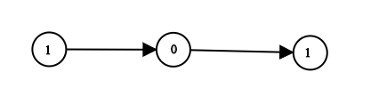

1290. 二进制链表转整数
从高位到低位扫链表，每读一位就把已有结果 ×2 再加这一位，一遍完成二进制转十进制。
思路
- 二进制左移一位等于 ×2：读到新位
val时，ans = ans*2 + val把旧结果整体升一位再放下新位。 - 链表高位在头，正好按顺序扫；不用先收集位数或翻转链表。
图解
最优解
1class Solution {2 public int getDecimalValue(ListNode head) {3 // 从高位到低位走：每读一位，已有结果先 ×2 再加上这一位4 int ans = 0;5 for (ListNode p = head; p != null; p = p.next) {6 ans = ans * 2 + p.val;7 }8 return ans;9 }10}题目
给你一个单链表的引用结点 head。链表中每个结点的值不是 0 就是 1。已知此链表是一个整数数字的二进制表示形式。
请你返回该链表所表示数字的 十进制值 。
最高位 在链表的头部。
示例 1：

输入：head = [1,0,1] 输出：5 解释：二进制数 (101) 转化为十进制数 (5)
示例 2：
输入：head = [0] 输出：0
提示：
- 链表不为空。
- 链表的结点总数不超过
30。 - 每个结点的值不是
0就是1。
题面取自力扣当前版本。
数据快照 2026-11-04。题面版权归力扣所有，本站点仅供本人学习使用，请勿对外发布。